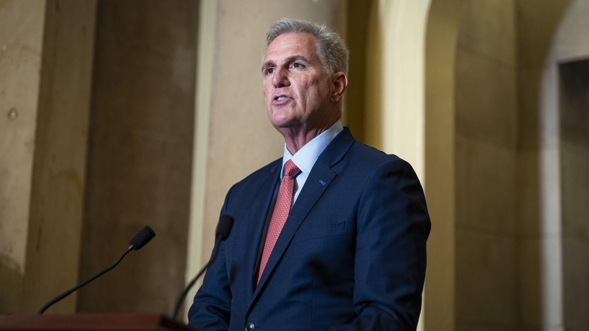

McCarthy's impeachment move crashes against spending headachesHouse Speaker Kevin McCarthy’s (R-Calif.) decision to launch an impeachment inquiry on Tuesday has done little to clear the obstacles in his path to averting a government shutdown. Why it matters: McCarthy will likely need both GOP hardliners and Democrats to fund the government, but the gambit failed to pacify the former group while incensing the latter. - McCarthy's right flank had been agitating to ramp up impeachment – though it was just one of a long list of conditions to secure their continued cooperation. What they’re saying: “Him starting the impeachment inquiry gives him no – zero – cushion, relief, grace, as it applies to [the] spending battle," Rep. Bob Good (R-Va.), a member of the right-wing Freedom Caucus, told Axios. - Rep. Ralph Norman (R-S.C.) said they are “completely different” issues and that the impeachment inquiry “doesn’t affect” the Freedom Caucus’ push for spending cuts and conservative policy riders. - McCarthy “did right on the impeachment inquiry,” Norman said, but with government spending, “numbers are numbers.” - Rep. Andy Biggs (R-Ariz.) suggested the inquiry announcement is a distraction from the spending fight: "I think the timing is interesting, don't you? ... It might be seen by some as a deflection." Matt Gaetz (R-Fla.), who has been beating the drum of a McCarthy removal effort, called the inquiry a “baby step” that “isn’t real” in a floor speech on Tuesday. - Gaetz told reporters that McCarthy advancing a stopgap government funding bill, without attaching legislation conservatives have demanded, could precipitate a removal vote. The other side: Rep. Dan Kildee (D-Mich.) said the inquiry is "just another demonstration of his weakness as speaker" and "makes it more difficult to do almost anything," including working together on government spending. - "He's in a trap," Rep. Scott Peters (D-Calif.) said of his fellow Californian. "If you give him the full benefit of the doubt that he wants to solve the problem, he's still got 20 people who seem willing to burn down the house." - "Any time you do something like this, it makes it harder for the sides to work together and try to negotiate. No question," said one House Democrat – though, citing McCarthy's good working relationship with Minority Leader Hakeem Jeffries (D-N.Y.), they added: "I don't know that this all of a sudden means the House can't function." Between the lines: Centrist and swing-district Republicans, many of whom had voiced opposition to an impeachment inquiry, seemed to be happy. - Reps. Nick LaLota (R-N.Y.), Mike Lawler (R-N.Y.), Marc Molinaro (R-N.Y.) and John Duarte (R-Calif.), some of the GOP's most vulnerable incumbents, all voiced support for the inquiry on Tuesday. - "We've got enough probable cause to go forward and see if we get the hard evidence," said Duarte. "This is about getting subpoena power." - Rep. Mike Garcia (R-Calif.) told Axios he believes there is "enough substantiation for it to move forward." Yes, but: When it comes to actually voting on impeachment, none of those members are sold yet. Some in McCarthy's conference are still opposed to the inquiry. - "I recommend ... against [an impeachment] inquiry unless more evidence that directly connects to President [Biden] is found," Bacon said, adding that he is "skeptical" a vote to launch the inquiry would have passed. What's next: The right's opening salvo on spending could come as soon as this week, with Freedom Caucus members threatening to tank a procedural vote on a bill to fund the Department of Defense. |
 |